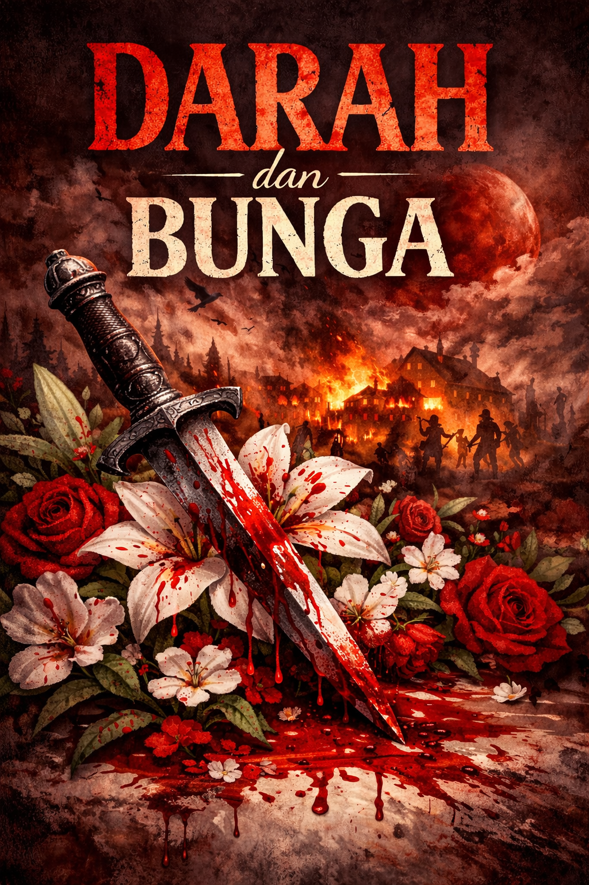
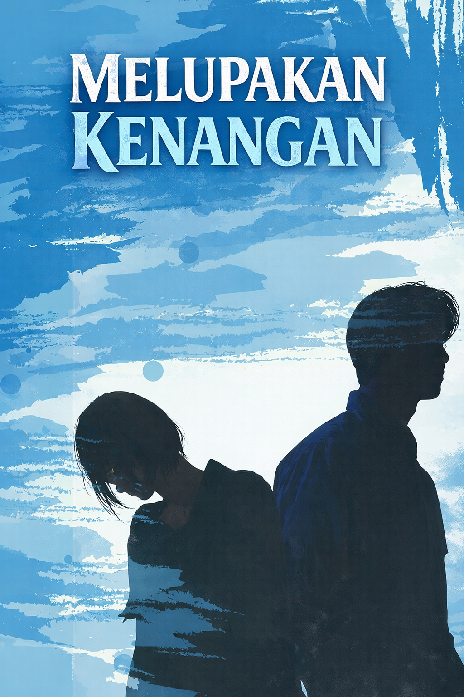
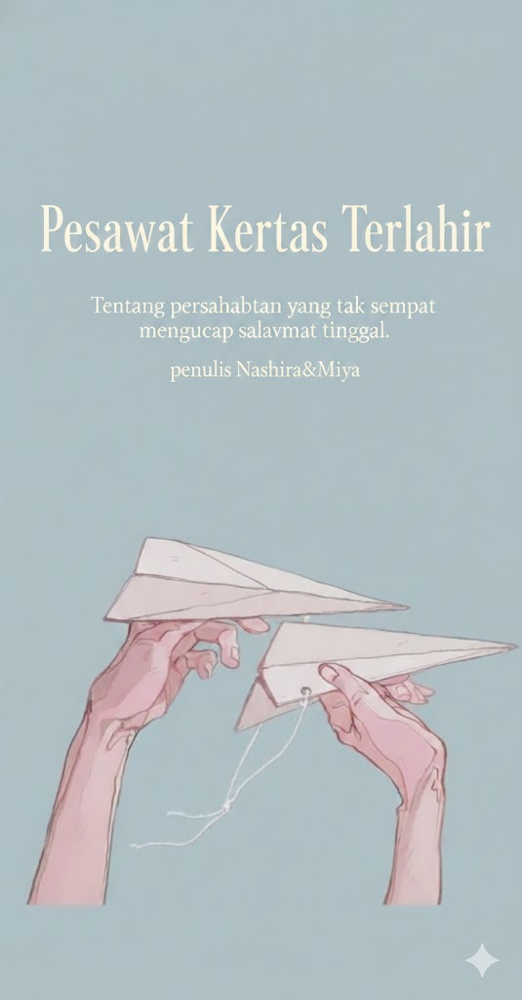

Darah&Bunga
RP175.000
Di balik keindahan bunga, ada darah yang tak pernah kering.Sebuah kisah tentang cinta, dendam, dan luka yang tumbuh di tengah kehancuran. Saat perasaan dan kebencian saling bertabrakan, setiap pilihan bisa berujung pada kehilangan.

Melupakan Kenangan
RP185.000
Mereka pernah saling mencintai, kini saling menjauh.Melupakan Kenangan adalah cerita tentang cinta yang tak selesai, kenangan yang sulit dilepas, dan pilihan antara mengikhlaskan atau kembali memperjuangkan.

Pesawat Terakhir Kita
RP155.000
Kisah tentang dua sahabat yang terikat oleh janji dan lipatan pesawat kertas. Namun, ketika maut menjemput tanpa peringatan, pesawat kertas itu menjadi satu-satunya saksi bisu dari kata perpisahan yang tak pernah sempat terucap. Sebuah narasi syahdu tentang kehilangan dan memori yang abadi.

Loteng Berhantu
RP165.000
Sebuah keluarga pindah ke rumah tua, hanya untuk menyadari bahwa loteng mereka menyimpan rahasia kelam. Antara bisikan gaib dan bayangan yang mengintai, mereka harus mengungkap kebenaran sebelum sesuatu yang bersemayam di sana mengambil alih segalanya. Teror mencekam di balik pintu kayu yang terkunci.